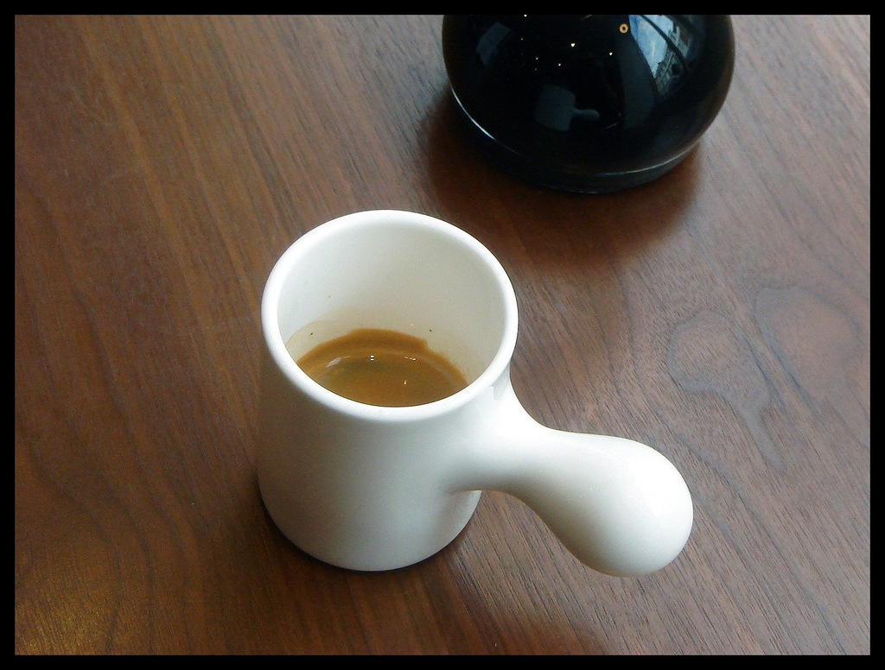

The following material is extremely basic, however like most stories, the best way to begin is to start at the very beginning.
Imagine we are visiting our favourite coffee shop. They will make for you just about any drink you desire, from a sort, intense espresso ristretto through a dry cappuccino, up to those coffee-flavoured desert concoctions featuring various concentrated syrups and milks. (You tolerate the existence of sugary drinks because they provide a sufficient profit margin to the establishment to finance your hanging out there all day using their WiFi and ordering a $3 drink every few hours.)
You express your order at one end of their counter, the folks behind the counter perform their magic, and deliver the coffee you value at the other end. This is exactly how the CoffeeScript environment works for the purpose of this book. We are going to dispense with web servers, browsers and other complexities and deal with this simple model: You give the computer an expression, and it returns a value, just as you express your wishes to a barista and receive a coffee in return.
All values are expressions. Say you hand the barista a Cafe Cubana. Yup, you hand over a cup with some coffee infused through partially caramelized sugar. You say, “I want one of these.” The barista is no fool, she gives it straight bak to you, and you get exactly what you want. Thus, a Cafe Cubana is an expression (you can use it to place an order) and a value (you get it back from the barista).
Let’s try this with something the computer understands easily:
42
Is this an expression? A value? Neither? Or both?
The answer is, this is both an expression and a value.1 The way you can tell that it’s both is very easy: When you type it into CoffeeScript, you get the same thing back, just like our Cafe Cubana:
42
#=> 42
All values are expressions. That’s easy! Are there any other kinds of expressions? Sure! let’s go back to the coffee shop. Instead of handing over the finished coffee, we can hand over the ingredients. Let’s hand over some ground coffee plus some boiling water.
Now the barista gives us back an espresso. And if we hand over the espresso, we get the espresso right back. So, boiling water plus ground coffee is an expression, but it isn’t a value.2 Boiling water is a value. Ground coffee is a value. Espresso is a value. Boiling water plus ground coffee is an expression.
Let’s try this as well with something else the computer understands easily:
"CoffeeScript" + " " + "Ristretto"
#=> "CoffeeScript Ristretto"
Now we see that “strings” are values, and you can make an expression out of strings and an operator +. Since strings are values, they are also expressions by themselves. But strings with operators are not values, they are expressions. Now we know what was missing with our “coffee grounds plus hot water” example. The coffee grounds were a value, the boiling hot water was a value, and the “plus” operator between them made the whole thing an expression that was not a value.
In CoffeeScript, we test whether two values are identical with the is operator, and whether they are not identical with the isnt operator:
2 is 2
#=> true
'hello' isnt 'goodbye'
#=> true
How does is work, exactly? Imagine that you’re shown a cup of coffee. And then you’re shown another cup of coffee. Are the two cups “identical?” In CoffeeScript, there are four possibilities:
First, sometimes, the cups are of different types. One is a demitasse, the other a mug. This corresponds to comparing two things in CoffeeScript that have different types. For example, the string "2" is not the same thing as the number 2. Strings and numbers are different types, so strings and numbers are never identical:
2 is '2'
#=> false
true isnt 'true'
#=> true
Second, sometimes, the cups are of the same type–perhaps two espresso cups–but they have different contents. One holds a single, one a double. This corresponds to comparing two CoffeeScript values that have the same type but different “content.” For example, the number 5 is not the same thing as the number 2.
true is false
#=> false
2 isnt 5
#=> true
'two' is 'five'
#=> false
What if the cups are of the same type and the contents are the same? Well, CoffeeScript’s third and fourth possibilities cover that.
Third, some types of cups have no distinguishing marks on them. If they are the same kind of cup, and they hold the same contents, we have no way to tell the difference between them. This is the case with the strings, numbers, and booleans we have seen so far.
2 + 2 is 4
#=> true
(2 + 2 is 4) is (2 isnt 5)
#=> true
Note well what is happening with these examples: Even when we obtain a string, number, or boolean as the result of evaluating an expression, it is identical to another value of the same type with the same “content.” Strings, numbers, and booleans are examples of what CoffeeScript calls “value” or “primitive” types. We’ll use both terms interchangeably.
We haven’t encountered the fourth possibility yet. Stretching the metaphor somewhat, some types of cups have a serial number on the bottom. So even if you have two cups of the same type, and their contents are the same, you can still distinguish between them.
Cafe Macchiato is also a fine drink, especially when following up on the fortunes of the Azzuri or the standings in the Giro D'Italia
So what kinds of values might be the same type and have the same contents, but not be considered identical to CoffeeScript? Let’s meet a data structure that is very common in contemporary programming languages, the Array (other languages sometimes call it a List or a Vector).
Here are some expressions for arrays you can try typing for yourself:
[1, 2, 3]
[1,2,2]
[1..3]
These are expressions, and you can combine [] with other expressions. Go wild with things like:
[2-1, 2, 2+1]
[1, 1+1, 1+1+1]
We aren’t going to spend a lot of time talking about it, but if you enable multiline mode (with ctrl-v), you can also type things like:
[
1
2
3
]
Notice that you are always generating arrays with the same contents. But are they identical the same way that every value of 42 is identical to every other value of 42? Try these for yourself:
[1..3] is [1,2,3]
[1,2,3] is [1, 2, 3]
[1, 2, 3] is [1, 2, 3]
How about that! When you type [1, 2, 3] or any of its variations, you are typing an expression that generates its own unique array that is not identical to any other array, even if that other array also looks like [1, 2, 3]. It’s as if CoffeeScript is generating new cups of coffee with serial numbers on the bottom.
They look the same, but if you examine them with is, you see that they are different. Every time you evaluate an expression (including typing something in) to create an array, you’re creating a new, distinct value even if it appears to be the same as some other array value. As we’ll see, this is true of many other kinds of values, including functions, the main subject of this book.

A short, intense shot of espresso
Wikipedia on Ristretto:
”Ristretto is a very ‘short’ shot of espresso coffee. Originally this meant pulling a hand press faster than usual using the same amount of water as a regular shot of espresso. Since the water came in contact with the grinds for a much shorter time the caffeine is extracted in reduced ratio to the flavorful coffee oils. The resultant shot could be described as bolder, fuller, with more body and less bitterness.”